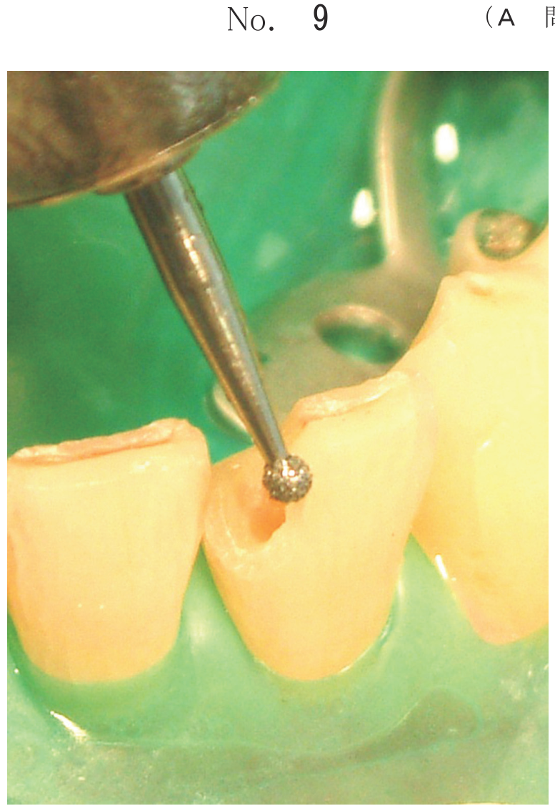
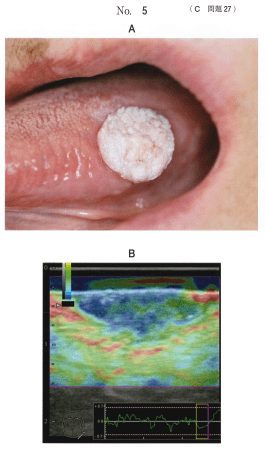

超音波（人間には聞こえない高い周波数の音波）が生体に反射・散乱・吸収する性質を利用した画像検査法。
組織から反射した超音波をプローブで受信して断層画像を得る。
| 組織 | 音響インピーダンス | 特徴 |
|---|---|---|
| 空気 | 0.0004 | 最小（超音波を通さない） |
| 脂肪 | 1.38 | 軟組織は近い値 |
| 水 | 1.50 | |
| 血液 | 1.61 | |
| 筋肉 | 1.70 | |
| 骨 | 7.80 | 最大（超音波を通さない） |
空気や骨があると、それより深部へ超音波は到達しない。
顎下部の腫脹を主訴として来院した患者に行った検査画像（別冊No.13）を別に示す。
画像形成に関与するのはどれか。2つ選べ。

【解説】超音波検査の画像形成には、超音波の反射と音速（音響インピーダンス＝音速×密度）が関与する。糖代謝はPET、縦緩和はMRI、光子エネルギーはエックス線に関係する用語。
最も基本的な超音波検査。組織の断層像を得る。
ドプラ効果を利用して血流情報を得る検査。
プローブで圧迫を加えたときの組織のひずみから組織の硬さ（弾性）を画像化する検査。
舌の腫脹を主訴として来院した患者の口腔内写真（別冊No.5A）とある口腔内検査の画像（別冊No.5B）を別に示す。
画像形成に最も関係するのはどれか。1つ選べ。

【解説】この画像はエラストグラフィである。エラストグラフィは組織の硬さ（弾性）を画像化する検査で、プローブで圧迫したときの組織のひずみから弾性係数を算出する。血流の速度はドプラモード、糖代謝はPET、水分子の拡散はMRI拡散強調像、エックス線減弱はCTに関係する。